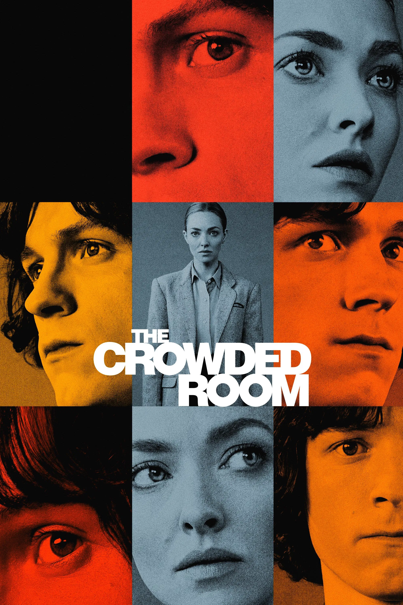

Tom
Holland
From a West End stage to the Marvel Cinematic Universe — the
story of Britain's most compelling actor of his generation.
born
1 june 1996 · Kingston upon thames
Known for
Spider-Man . cherry . uncharted
01 biography
1996
Kingston, England
about
more than a superhero
a performer of rare depth
Thomas Stanley Holland was born on 1 June 1996 in Kingston upon Thames, Surrey. He grew up in a creative household — his father is comedian Dominic Holland, and his younger brothers Paddy, Sam, and Harry have all dabbled in the industry.
He discovered dance at nine years old, enrolling at the Nifty Feet Dance School where his natural talent drew attention almost immediately. By 12, he had auditioned for Billy Elliot the Musical and secured the lead role at London's prestigious Victoria Palace Theatre — a feat of extraordinary discipline for a child actor.
After a brief stint studying at BRIT School for Performing Arts, he transitioned to film with Juan Antonio Bayona's The Impossible (2012), earning a BAFTA Rising Star nomination at 16 and alerting Hollywood to his exceptional gift for emotional truth.
Today, he is widely recognized as one of the finest actors of his generation — a performer who combines West End technical rigour with an instinctive cinematic presence.
02 career journey
From the stage
to the screen
A career built on craft, discipline, and an almost reckless commitment to physical and emotional storytelling. Holland's journey from Billy Elliot to the MCU is one of modern cinema's most remarkable ascents.
2006
stage debut
Joins the Nifty Feet Dance School in London at age nine. Performs at the Richmond Dance Festival — his first taste of a live audience.
2008
Billy Elliot
Auditions for Billy Elliot the Musical and lands the lead at London's Victoria Palace Theatre.
2012
The Impossible
His film debut opposite Naomi Watts earns him a BAFTA Rising Star nomination.
2016
Cast as Spider-Man
Marvel Studios announces Tom Holland as the new Peter Parker — chosen from a global search at just 19 years old.
2017
Homecoming
Spider-Man: Homecoming becomes a worldwide phenomenon, cementing Holland as one of Hollywood's brightest leading men.
2021
Cherry & Pandemic
Defies typecasting with Cherry and delivers an uncharacteristically raw performance in one of the most ambitious projects of his career.
2021
No Way Home
The film shatters box office records. Holland's emotional performance earns him universal critical acclaim and industry respect.
2024
Return to Stage
Returns to his theatrical roots, committing to the stage once more and proving his lifelong devotion to the craft of performance.
03 Filmography
his work
Hover each card to read more about the role.
lucas bennet
the impossible
Peter Parker / Spider-Man
Captain America: Civil War
Peter Parker / Spider-Man
Spider-Man: Homecoming
Peter Parker / Spider-Man
Avengers: Infinity War
Cherry
Cherry
Peter Parker / Spider-Man
Spider-Man: No Way Home
Nathan Drake
Uncharted

Danny Sullivan
The Crowded Room
04 achievements
the numbers
speak for themselves.
3
Spider-Man
Solo films
MCU record
10+
Major Studio
Releases
Feature Films
$9B+
Combined
Box Office
Worldwide gross
26
Age At
No Way Home
Youngest Avenger
BAFTA Rising Star
The Impossible-2013
MTV Movie Award
Best Hero · Spider-Man: Homecoming · 2017
People's Choice Award
The Action Movie Star · 2022
I never want to stop growing. I never want to be comfortable. The moment I feel comfortable is the moment I start to stagnate — and I can't let that happen.